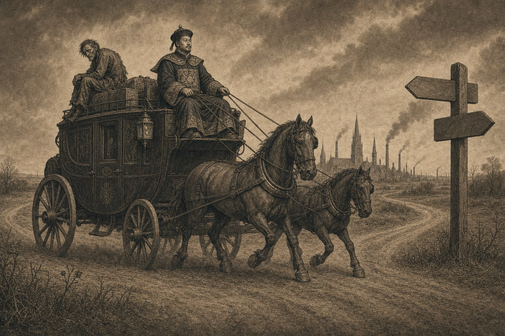
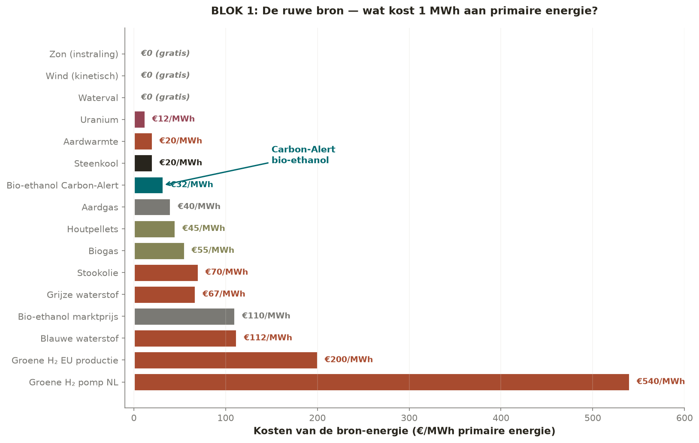
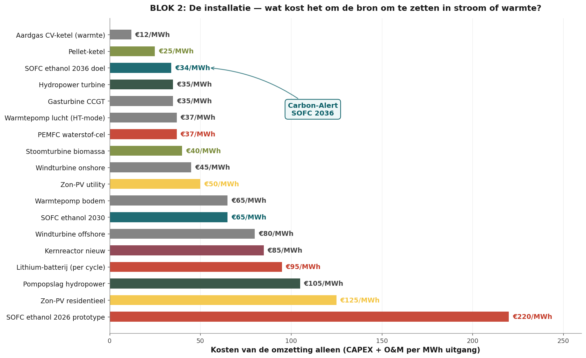

En el pescante o en el portaequipajes
Europa puede elegir — hoy, no mañana

En el pescante se sienta el cochero. Sostiene las riendas. Ve el camino. Determina la ruta. En el portaequipajes se sienta quien se ha dejado llevar. No ve nada. No decide nada. Depende. Europa ha ocupado ese lugar durante treinta años — con baterías de China, petróleo de Arabia Saudí, gas de Rusia. Ahora hay una rienda lista que podemos tomar nosotros mismos. Pero solo hoy. No mañana.
La tesis de este artículo
Quien espera a que otros lo vean, pronto volverá a quedar atrás. La ventaja no es lo que dicen en Bruselas o La Haya. La ventaja es lo que usted mismo ve antes, comprende antes y aborda antes que los demás. El cochero que espera el consenso se convierte él mismo en carga.
Las cifras de este artículo muestran que hay una ruta energética que gana sin subsidio. En cada unidad de medida. Esa ruta no se inventó en Europa, pero sí puede construirse en Europa. Si empezamos hoy. De lo contrario, la construirán Japón, Corea y China. Y dentro de siete años la importaremos en condiciones de licencia asiáticas.
Esa decisión no está en Bruselas. Esa decisión está en manos de todo el que lea este texto y actúe según lo que ve.
- Autor
- Jacobus van Merksteijn — Carbon-Alert Ltd
- Fecha
- 20 de junio de 2026 — Palma, Mallorca
- Método
- Tres bloques: fuente · conversión · sistema final
- Alcance
- Móvil + estacionario · transporte + calefacción · todas las formas de energía
- Subsidios
- Eliminados deliberadamente de cada cifra (SDE++, ETS, RED-III, BPM, feed-in)
- Externalidades
- Limpieza minera y efecto BECCS incluidos explícitamente
¿Quién está ahora en el pescante — y quién en el portaequipajes?
Primero una cronología. En 2009, Brookhaven National Laboratory publicó un catalizador que descompone el etanol a temperatura ambientea. Cuatro años más tarde, Nissan puso en marcha una planta piloto de pilas de combustible de óxido sólido con bioetanol. En 2022, PNAS publicó un catalizador con un 99,9 % de selectividad de CO₂ a un potencial récord bajob. En 2024, Nissan puso en marcha en Tochigi una instalación con un rendimiento del setenta por ciento. En 2025, Brookhaven licenció la técnica a Chemcat Japan. En 2026 — hoy — Europa tiene cero fábricas comerciales de etanol-SOFC.
Léalo otra vez. Diecisiete años entre el avance científico y la licencia asiática. En esos diecisiete años, Europa invirtió miles de millones en gigafábricas de baterías, corredores de hidrógeno y parques eólicos SDE. Ese es dinero ya quemado — hundido en una suposición que en 2016 parecía evidente pero en 2026 ya no es cierta.
Stellantis abandonó el hidrógeno en 2025c. Bosch cerró su división SOFCd. Volkswagen, Mercedes y Stellantis trabajaron desde 2017 en pilas de combustible de etanol dentro del consorcio IPEN y se retiraron estratégicamentee. No por falta de tecnología. Por falta de rumbo político. La industria europea no recibió ninguna señal de que este camino estuviera permitido.
Mientras tanto, Nissan avanzaba. Doosan también. Weichai empezó a licenciar. Bloom Energy escalaba. Ceres Power firmaba contratos en Corea. La ventana se cerraba en Europa mientras en Asia estaba abierta de par en par. Allí estaban los cocheros. Nosotros nos quedamos mirando.
Lo que aprendemos de quince años de retraso en la producción de baterías:
Europa perdió la batalla de la celda de litio-ion en diez años. CATL, BYD y LG tienen ahora el 73 por ciento de la capacidad mundial. Pagamos miles de millones en subsidios a gigafábricas europeas que nunca serán competitivas en costes. Estamos cometiendo el mismo error ahora en la ruta del hidrógeno. Y, sin intervención, también en la ruta del etanol-SOFC.
Los tres bloques siguientes muestran por qué esto no puede continuar así. Las cifras no son políticas. Son físicas y de economía empresarial. Muestran una ruta que gana sin que intervenga un solo céntimo de subsidio. Quien no toma esa ruta elige conscientemente el portaequipajes.
Europa ya lo tiene todo — hoy, no mañana
El mejor contraargumento contra quien diga que esto es demasiado ambicioso: cada bloque de construcción que necesitamos ya existe. Ningún Plan Marshall. Ningún desarrollo de diez años. Ninguna inversión multimillonaria previa. Los cuatro fundamentos:
Uno. Los desempleados esperan trabajo. España cuenta 2,6 millones de desempleados. Italia 2,0 millones. Francia 2,4 millones. Alemania 2,8 millones. Países Bajos 380.000. Gran parte de ellos tiene formación técnica o es mano de obra cualificada. La cadena Carbon-Alert necesita personal exactamente en esos niveles: producción de pellets, operación de destilación, instalación SOFC, mantenimiento, logística de CO₂ para BiCRS. Empleos fijos, no deslocalizables. Repartidos por todas las regiones. No es trabajo de Silicon Valley — es trabajo industrial. En eso Europa es buena.
Dos. La infraestructura ya existe. 120.000 gasolineras en Europa. Mecánicamente idénticas para gasolina, diésel y etanol — solo cambian la etiqueta y la calibración. Más de 1.200 fábricas de pellets en la UE que pueden suministrar directamente materia prima celulósica. 70.000 km de red de gasoductos existente, utilizable para la distribución regional de etanol. Destilerías en cada región cerealista, remolachera y vinícola. Polígonos industriales vacíos donde había plantas de carbón, refinerías y automoción — ubicación directa para hubs BiCRS+SOFC.
Tres. La tecnología está probada. No es un prototipo. No es una prueba de concepto. No es algo que 'todavía debe escalarse'. Nissan opera desde 2026 en Tochigi un etanol-SOFC con un rendimiento del 70 por ciento a escala de prueba. Ceres Power entrega este año 50 MW de stacks SOFC a Doosan además de la licencia de producción a Weichai. Lawrence Berkeley demuestra que un catalizador HEA puede funcionar con un 80 por ciento menos de metal noble. Brookhaven ya resolvió la ruptura C–C a temperatura ambiente en 2009. PNAS demostró en 2022 un 99,9 por ciento de selectividad de CO₂. Esto no es investigación de riesgo. Esto es implementación.
Cuatro. La curva de aprendizaje está documentada. No por consultores. Por la Agencia Internacional de Energía-Bioenergy Task 39, ya en 2020, con datos medidos en fábricas de celulosa que operan hoy. €0,55 por litro hoy. €0,45 en 2030. €0,30 en 2036. €0,25 en 2040. Una tasa de aprendizaje del 18 por ciento en el stack SOFC. La misma curva que redujo el LCOE de los paneles solares por un factor de seis entre 2010 y 2020 — solo que ahora en un combustible líquido que no depende del Sahara ni del fondo del Mar del Norte.
Lo que falta, entonces, no es dinero. Lo que falta no es la tecnología. Lo que falta no es el mercado.
Lo que falta es un cochero europeo que vea que todo ya está sobre la mesa — y tome las riendas.
Bloque 1
La fuente
¿Qué cuesta un megavatio-hora de energía primaria a la puerta de fábrica — sin subsidio alguno?

La clasificación es cruel. Sol, viento y agua — gratis. Uranio 12 € por megavatio-hora. Geotermia 20 €. Bioetanol Carbon-Alert 32 €. Gas natural 40 €. Pellets de madera 45 €. Fuel-oil 70 €. Hidrógeno gris 67 €. Hidrógeno verde en el surtidor neerlandés: quinientos cuarenta euros por megavatio-hora.
Quinientos cuarenta. Frente a treinta y dos. Eso no es un detalle. Es un orden de magnitud que ningún subsidio puede compensar. Quien mantiene la ruta neerlandesa del hidrógeno en el surtidor paga estructuralmente diecisiete veces el precio de la alternativa más barata. Ningún consultor puede arreglar eso. Ninguna directiva de Bruselas puede arreglar eso.
La física detrás del hidrógeno verde es desfavorable y sigue siendo desfavorable. La electrólisis requiere 52 kilovatios-hora de electricidad por kilogramo de hidrógeno. La compresión a 700 bar cuesta otro 10 por ciento. El transporte y el almacenamiento, otro 15. Cada factor de pérdida se multiplica. Esta no es una tecnología que mejore con la escala — es una tecnología cuyos costes estructurales están inscritos en las leyes de la naturaleza.
El bioetanol de la ruta celulósica hace lo contrario. Las materias primas en pellets son locales, flujos residuales, compatibles con BECCS. La curva de aprendizaje va de €0,55 por litro hoy a €0,25 en 2040 — sin subvención política. Eso está documentado por IEA Bioenergy Task 39 desde 2020. No es una predicción. Es una medición en fábricas de celulosa que operan hoy.
Bloque 2
La conversión
¿Qué cuesta convertir esa fuente en un servicio utilizable — electricidad o calor?

Una caldera de gas natural funciona con 12 € de conversión por megavatio-hora — pero entonces quema combustible fósil. Una caldera de pellets con 25 €. El etanol-SOFC 2036 con 34 €. Una turbina de gas CCGT con 35 €. Una pila de combustible PEMFC de hidrógeno con 37 €. Turbina de vapor de biomasa 40 €. Turbina eólica terrestre 45 €. Solar fotovoltaica a gran escala 50 €.
Solar fotovoltaica residencial: 125 € por megavatio-hora. Ocho veces más cara que la versión a gran escala. La economía del panel pequeño en el tejado pequeño no funciona sin subsidio. Esa es la verdad detrás de cada instalación solar doméstica en los Países Bajos: sin el sistema de compensación neta, cualquier instalador cerraría mañana.
El etanol-SOFC está ahora en 2026 en 220 € por megavatio-hora de conversión — un prototipo. Hacia 2036 eso baja a 34 €. No es una proyección optimista. Es la curva de escala que Bloom Energy, Doosan, Ceres Power y Weichai demuestran hoy. Una reducción de costes de seis a ocho veces en diez años — comparable al LCOE de los paneles solares entre 2010 y 2020.
Quien entra ahora compra a la tarifa de prototipo y avanza con la curva de aprendizaje. Quien espera, comprará en diez años a la tarifa de licencia japonesa. La diferencia entre esas dos actitudes es la diferencia entre cochero y pasajero.
Bloque 3
El sistema final
¿Qué paga el usuario por servicio prestado — kilovatio-hora, cien kilómetros, megavatio-hora de calor?
Solo en este tercer paso comparamos cosas comparables. Fuente más conversión más externalidades. Por servicio que el usuario final realmente consume.
3a · Electricidad estacionaria

| Sistema final 2036 | Precio final | Aclaración |
|---|---|---|
| Carbon-Alert SOFC etanol | 9,97 c€/kWh | Potencia 24/7, bonificación de calor CHP |
| Eólica terrestre + batería | 12–16 c€ | Factor de capacidad del 40 % + almacenamiento |
| Generador de gas natural comercial | 13–17 c€ | Incluye ETS 100 €/ton |
| Solar FV + batería residencial | 14–18 c€ | Factor de capacidad del 30 % |
| Red comercial española | 21,5 c€ | Precio de mercado para el usuario final |
| Generador diésel | 28–32 c€ | Combustible 1,70 €/L, rendimiento 38 % |
| Pila de combustible H₂ verde | 30–40 c€ | H₂ 6 €/kg, rendimiento de celda 55 % |
3b · Movilidad por cien kilómetros

| Sistema de propulsión 2036 | Consumo | € / 100 km |
|---|---|---|
| Etanol-SOFC (0,30 €/L) | 5 L/100km | 1,50 € |
| VEB en red (21,5 c€/kWh) + amortización batería | 17 kWh/100km | 5,15 € |
| Diésel (1,80 €/L) | 5 L/100km | 9,00 € |
| Gasolina (1,70 €/L) | 6 L/100km | 10,20 € |
| VEB en carga rápida (~50 c€/kWh) | 17 kWh/100km | 8,50 € |
| Surtidor de hidrógeno (18 €/kg) | 1 kg/100km | 18,00 € |
3c · Calefacción por megavatio-hora

| Sistema de calefacción 2036 | Precio final MWh | Aclaración |
|---|---|---|
| Carbon-Alert SOFC + CHP | 83 € | Electricidad + calor combinados |
| Caldera de pellets | 90 €–110 € | Pellets propios, sin subsidio |
| Bomba de calor con eólica sin subsidio | 97 €–137 € | COP 3,2 · electricidad 13–18 c€/kWh |
| Bomba de calor con electricidad de red | 110 €–150 € | COP 3,2 · electricidad 21,5 c€/kWh |
| Caldera de gas natural (1,40 €/m³) | 140 €–160 € | Rendimiento 95 %, ETS incluido |
| Fuel-oil | 170 € | 1,20 €/L |
| Caldera de hidrógeno a 6 €/kg | 240 € | 40 kWh/kg, rendimiento 95 % |
El gran error del debate neerlandés sobre bombas de calor:
El precio real de la electricidad eólica sin subsidio SDE no es de 6 a 9 céntimos por kilovatio-hora. Es de 13 a 18 céntimos. Con eso, una bomba de calor sale a entre 97 € y 137 € por megavatio-hora de calor — no 60 € como sugieren las cifras del Acuerdo Climático. El etanol-SOFC+CHP funciona a 83 €. Sin ningún apoyo. Y con la bonificación de CO₂ de BECCS que nadie paga.
La prueba empresarial — hub de 100 kW, amortizado en tres años
Un hub Carbon-Alert de cien kilovatios cuesta 180.000 € de construir. Produce 800.000 kilovatios-hora al año con un factor de capacidad del 91 por ciento. Precio de mercado de esa electricidad: 172.000 €. Más 18.000 € de calor como bonificación CHP. Costes de combustible: 32.400 €. Mantenimiento: 8.000 €. Amortización del stack: 90.000 €. Margen neto del primer año: 59.600 €. Plazo de amortización: tres años.
Sin subsidio. Sin feed-in. Sin bonificación RED. Sin exención BPM. Sin crédito ETS. Solo venta a precio de mercado de un producto con costes de producción reales.

| Partida | Importe | Aclaración |
|---|---|---|
| CAPEX hub 100 kW | 180.000 € | 1.800 €/kW × 100 kW, balance of plant incluido |
| Producción anual de electricidad | 800.000 kWh | Factor de capacidad 91 por ciento, 8.000 horas plenas al año |
| Ingresos anuales electricidad | 172.000 € | Venta a precio de mercado 21,5 c€/kWh |
| Ingresos anuales calor CHP | 18.000 € | 20 por ciento de aprovechamiento de calor × 0,11 €/kWh |
| Ingresos anuales totales | 190.000 € | Precios de mercado, sin tarifa feed-in |
| Costes de combustible | −32.400 € | 108.000 L etanol × 0,30 €/L |
| OPEX y seguro | −8.000 € | 1,5 por ciento del CAPEX al año |
| Amortización del stack | −90.000 € | Lineal, dos años efectivos |
| Margen neto año 1 | 59.600 € | Sube a más de 100.000 € desde el año 4 |
| Plazo de amortización | ≈ 3 años | Sin un solo céntimo de subsidio |
| Opcional: bonificación SDE++ BECCS | +70.000 €/año | Reduce el plazo de amortización a aproximadamente 1 año |
La diferencia debe quedar clara: sin subsidio, un hub se amortiza en tres años. Con SDE++ en un año. Ambas cifras son sólidas. La verdadera historia es que la tecnología se sostiene por sí misma. Ese es el mensaje para cualquier gobierno: no tiene que dar dinero. Solo tiene que no interponerse.
El resumen en una tabla — y quien la lea ahora, decide
Cuatro columnas. Ocho filas. Una ruta que gana estructuralmente. Quien vea esta tabla y no haga nada, elige conscientemente el portaequipajes.
| Dimensión 2036 | Etanol-SOFC | VEB | Hidrógeno | Gas natural |
|---|---|---|---|---|
| Fuente por kWh | 4,1 c€ | 5–7 c€ | 15–20 c€ | 7–12 c€ |
| CAPEX conversión | 1.800 €/kW | 500 €–1.000 €/kW | 1.500 €/kW + 60k € coche | 1.800 €–3.000 € |
| Precio final c€/kWh | 9,97 | 14–18 | 30–40 | 11–15 |
| € por 100 km | 1,50 € | 5,15 €–8,50 € | 18,00 € | n.d. |
| € por MWh calor | 83 € | 97 €–150 € | 240 € | 140 € |
| Externalidades | BECCS −CO₂ | Limpieza Li/Co/Ni | Pt + limpieza | CO₂ + limpieza |
| ¿Dependiente de la política? | NO | SÍ (SDE) | SÍ (subsidio masivo) | SÍ (exención ETS) |
En cada unidad de medida que importa a su votante, su accionista o su contribuyente — €/kWh, €/100 km, €/MWh de calor — el etanol-SOFC gana en 2036. No porque lo decida un político. Porque la física y la curva de aprendizaje están ahí.
La única razón por la que esta imagen no domina el debate político actual: los subsidios reducen artificialmente el precio visible de las rutas competidoras. Este documento muestra el precio real.
¿Y si el precio evoluciona de otra forma? — riesgos evaluados con honestidad
Ningún caso de negocio sin un apartado honesto de riesgos. A continuación, los seis escenarios que la gente presenta cuando quiere esperar — y lo que realmente ocurre en cada escenario.
| Riesgo | Probabilidad | Qué ocurre |
|---|---|---|
| El precio del etanol baja más lento que 0,30 €/L | Media | El hub sigue siendo rentable hasta 0,45 €/L. Solo el plazo de amortización sube a 4,5 años. |
| El CAPEX del SOFC se estanca en 3.000 €/kW | Baja | Doosan, Weichai y Bloom ya han anunciado capacidad de producción. |
| El precio de red baja en lugar de subir | Baja | El CAPEX de red de la UE y la fijación de precios de CO₂ hacen la bajada extremadamente improbable. |
| El hidrógeno hace un regreso | Muy baja | Salidas de Bosch/Stellantis, retraso de Hyundai — el H₂ es estructuralmente más caro. |
| Tirón político de subsidios hacia eléctrico/H₂ | Alta | Irrelevante. Las cuentas de Carbon-Alert cierran sin subsidio — sin exposición. |
| El crédito BECCS desaparece | Alta | Irrelevante. Ya no lo contamos — así que sin impacto. |
La ventaja estructural de Carbon-Alert es precisamente que el diseño no depende de los caprichos de los políticos y sus regímenes de subsidio. Cuando un régimen SDE++ cae, cae el plan de negocio que se apoya en él. El punto de equilibrio de Carbon-Alert no cambia. Nuestro caso de negocio se basa en fundamentos de mercado — no en la buena voluntad pública.
Lo que aprendemos de la historia — y por qué debemos intervenir ahora
En 1995, los fabricantes de automóviles japoneses empezaron con sistemas de propulsión híbridos. Europa dijo: demasiado complejo, demasiado caro, no escalable. Veinte años después, compramos la tecnología del Prius de Toyota mediante licencias.
En 2001, BYD empezó con baterías de litio-ion para automóviles. Europa dijo: demasiado inseguro, poco rentable. Quince años después, las gigafábricas europeas abren con celdas chinas y líneas de producción chinas.
En 2009, Brookhaven publicó la prueba de que el etanol puede oxidarse en frío. Europa dijo: química interesante, pero ya se ha elegido la ruta del hidrógeno. Diecisiete años después, Brookhaven licencia a Chemcat Japan.
Tres veces el mismo patrón. Siempre un actor asiático que ve y actúa. Siempre un consenso europeo que espera el consenso. Siempre terminando en pagar por licencias que nosotros mismos podríamos haber vendido. Tres generaciones de contribuyentes, tres veces la misma factura.
La ruta del etanol-SOFC es la cuarta oportunidad. Y quizá la última. Porque en cuanto Japón, Corea y China hayan escalado sus fábricas, la ventana se cierra. No porque la tecnología esté protegida, sino porque las ventajas de escala son irreversibles. Quien llegue primero al millón de unidades decide el precio para todos los demás.
Lo que puede poner sobre su mesa — hoy
Cinco decisiones que no cuestan dinero y lo cambian todo
- Aceleración de permisos — decida que las instalaciones BiCRS y SOFC deben tener permiso en un plazo de seis meses. No en dos o tres años. Una directriz interna a Urbanismo y Permisos. No cuesta nada. Gana dos años de ventaja.
- Neutralidad política — elimine el monopolio implícito de los VEB en las clasificaciones de emisión cero. El etanol-SOFC recibe los mismos derechos que el eléctrico de batería. Sin preferencia, sin exclusión. Una firma.
- Norma de surtidor E100 — solicite a la Comisión Europea una norma para surtidores de gasolina reformados capaces de suministrar etanol. Infraestructura de surtidor existente, reformable por unos pocos miles de euros por instalación. No es un paquete multimillonario, es una norma CEN europea.
- Contratación pública — permita que hospitales, centros de datos, cuarteles y edificios públicos elijan hubs Carbon-Alert sin bloqueos formales en las directrices de compra. Sin preferencia, solo acceso. A regular en su propio departamento de compras.
- Educación y formación profesional — incluya la operación con etanol y el mantenimiento de SOFC en 500 centros de formación profesional europeos. Un módulo de doce semanas. No esperar a que la tecnología esté lista — formar de antemano. Para la economía regional y para el empleo.
La decisión está sobre la mesa — y la mesa no está vacía
El cochero ve el camino. Decide. El pasajero del portaequipajes mira hacia atrás y espera. Ambas son opciones. Pero la segunda opción usted la toma no haciendo nada. La primera opción exige movimiento hoy.
Las cifras están. La tecnología está. La curva de aprendizaje avanza. Las fábricas japonesas funcionan. Las licencias asiáticas avanzan. Lo que falta no es la tecnología, ni el mercado, ni la ciencia. Lo que falta es un cochero europeo que vea lo que ya es visible y tome las riendas.
Carbon-Alert Ltd tiene su sede en Malta y Mallorca. El diseño está desarrollado. Las curvas de aprendizaje están documentadas. El caso de negocio está calculado sin subsidio alguno. Espera una sola cosa — un socio europeo, un ministro europeo, un inversor europeo que vea lo que hay sobre esta mesa y actúe.
Quien espera a que otros lo vean, pronto volverá a quedar atrás. Quien ve y actúa ahora, se sienta en el pescante.
Esa decisión no está en Bruselas. Está en usted.
Seguir leyendo — este tríptico va unido
Tres documentos, un solo mensaje
- 1. Este artículo — En el pescante o en el portaequipajes. El manifiesto. La tesis. La elección.
- 2. Visión 2036 — Hub Energético Carbon-Alert. El diseño técnico. Hub SOFC modular de 100 kW, análisis LCOE, cinco bloques de construcción, flujo de caja, matriz de riesgos. La prueba bajo la tesis.
- 3. Carta abierta a los gobiernos de Europa. El llamamiento. Cinco preguntas que no cuestan dinero. 350.000 empleos, 9.000 millones de euros de facturación anual, independencia energética — sin un solo céntimo de subsidio.